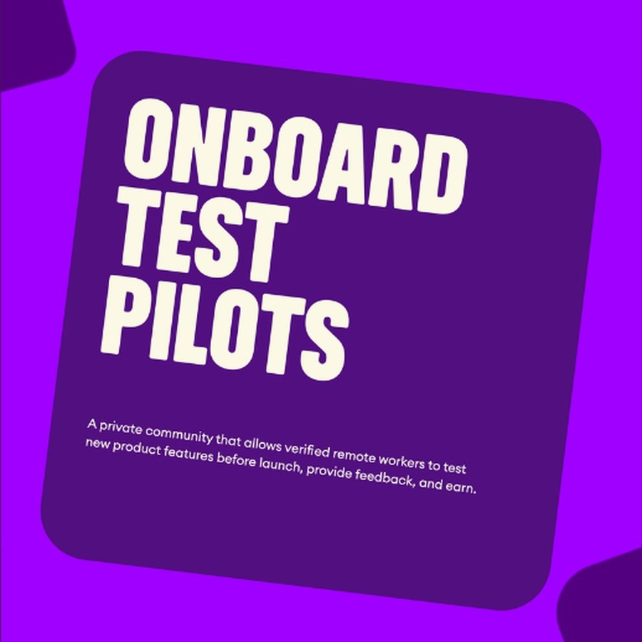
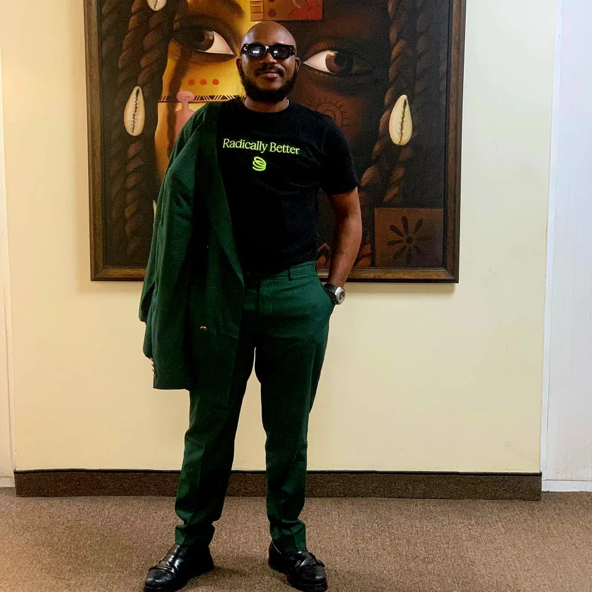
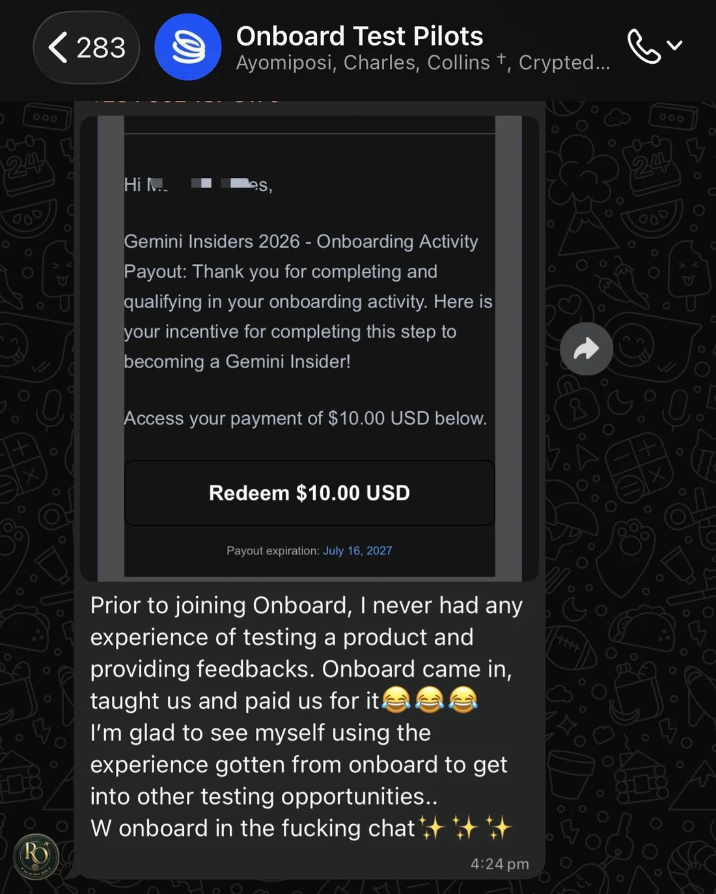
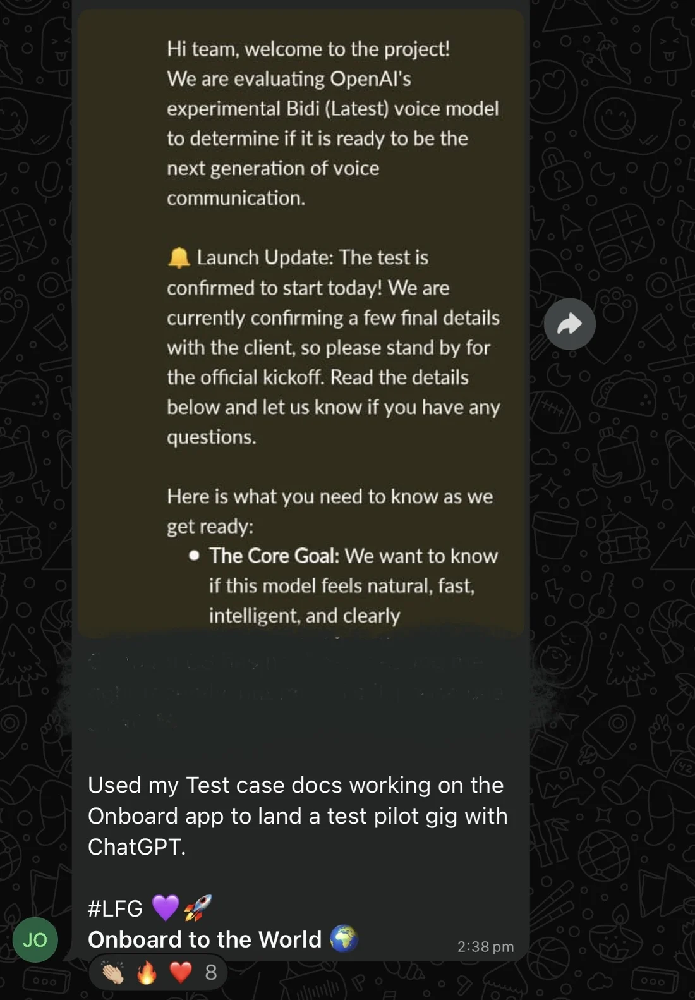

Building the Feedback Engine Behind Every Onboard Feature
Managing a community of product testers who validate new features before they ever reach the public.


“Every new feature we shipped needed real users to break it, question it, and tell us what wasn’t working, before it ever reached the public. Without that, we were just guessing.”
Our Approach
Turning Users Into Collaborators
We built a community of verified product testers who got early access to new features in exchange for honest, structured feedback.
What I Did
- Launched and managed Onboard Test Pilots, a private community of verified remote workers and users testing new features before launch
- Managed the structure for how testers accessed new features, submitted feedback, and flagged issues
- Worked directly with product and engineering teams to translate tester feedback into actionable fixes and improvements
- Built ongoing engagement within the community, keeping testers active and invested beyond a single feature cycle
- Recognised and highlighted standout contributors within the community, turning testing into a two-way relationship, not just a feedback form
The Results
Features Shaped by the People Who’d Actually Use Them
Before a feature reached the public, it had already been tested, broken, and improved by real users.
Wins
From Testers to Hires
Some of our testers didn’t just help us build. They built their own careers along the way.


More Projects
 Partnerships & Talent Program
Partnerships & Talent Program
Onchain Design Sprint
Organised a 2-week design sprint in collaboration with Dacoit Design and other brands to create opportunities fo...
 Campaigns & Activation
Campaigns & Activation
Stablecoin Sprint
Co-organised and led creative direction. Powered by Base West Africa, cNGN and Uglycash, stablecoin education and adoption...
 GTM & Product Launch
GTM & Product Launch
EUR/GBP Global Accounts
Owned end-to-end product marketing for the launch of EUR and GBP accounts, from positioning through to...
Let's Build Something Together
Whether you're hiring to market your products, tell the stories of your brand, creative strategy, or to build something bold or different. I am here for it.